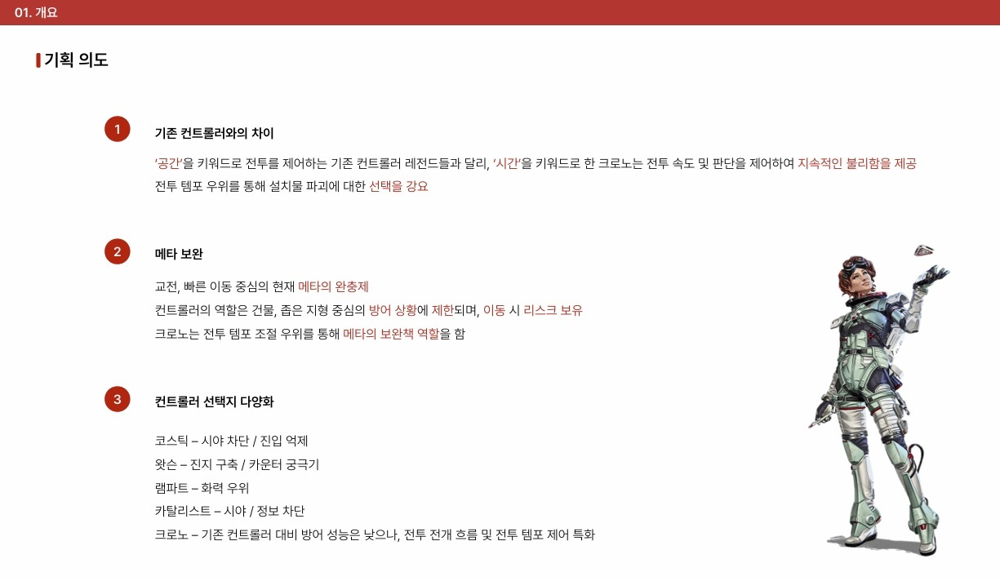
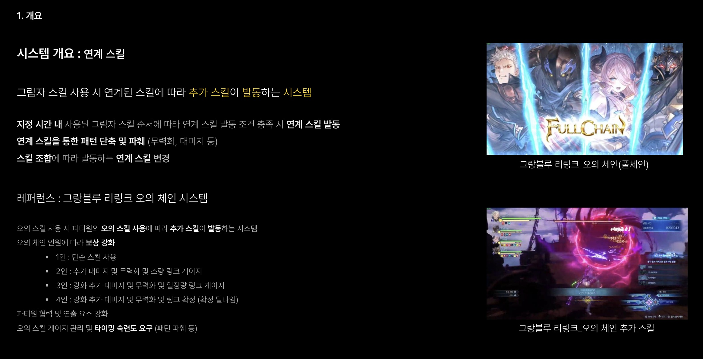

포트폴리오
작성한 포트폴리오 페이지 입니다. 전투 시스템, 버튼 입력 시 파일이 다운로드 됩니다.

Portfolio 01 · Apex Legend 신규 레전드 : 크로노 기획서
에이펙스 레전드의 신규 레전드 기획서입니다. 시간 왜곡 드론을 중심으로 전투의 흐름과 템포에 개입하는 컨트롤러 레전드로, 공간 통제 위주의 기존 컨트롤러와는 다른 전투 경험을 제공하는 것을 목표로 설계했습니다.
문서 열기 (PDF)

Portfolio 02 · 로스트 아크 신규 전투 시스템 : 연계 스킬 기획서
로스트아크의 신규 전투 시스템 기획서입니다. 아이템을 기반으로 한 신규 전투 시스템인 '그림자 스킬'을 바탕으로 작성했습니다. 보스와 전투를 진행하는 플레이어들의 협력 및 숙련도를 요구하는 시스템입니다.
문서 열기 (PDF)